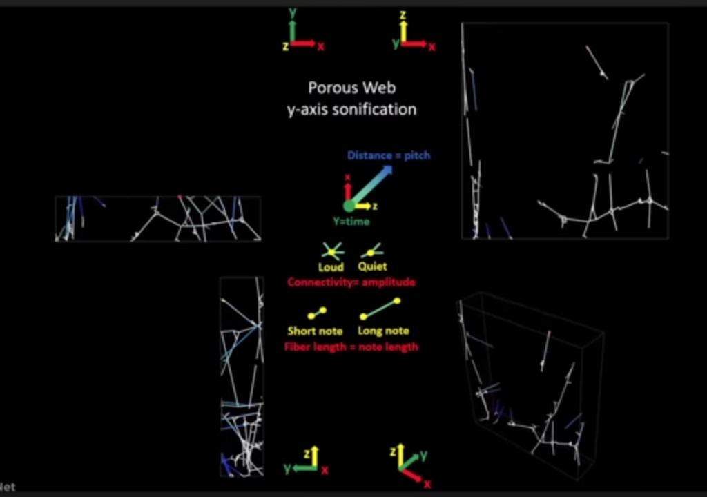

MIT's project on interspecies communication with spiders: utilizes a spider web scanning technique to create a 3-d model of the web, which is then translated into audible sound, creating an interactive soundscape that showcases the interplay between spider web vibrations and human improvisation.
research more...